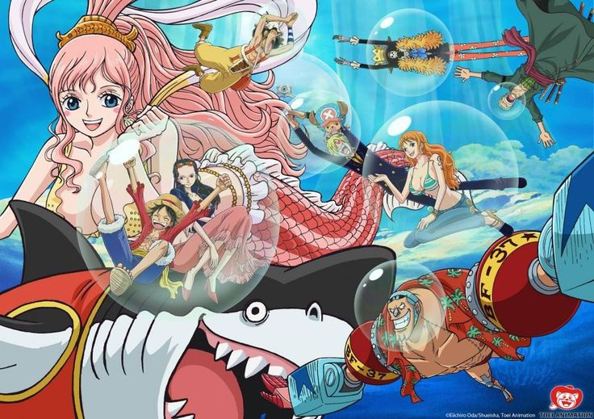

.jpg)


Les chapeau de pailles se rendent enfin pour l'île des hommes-poissons, Caribou intercepte soudainement le Sunny, avec son navire tracté par Meuh-Meuh. Le monstre marin d'Arlong qui reconnait Luffy et s'enfuit, laissant Caribou seul avec les pirates aux Chapeau de Paille. L'homme marécage est alors enfermé dans un tonneau. Plus tard, les Chapeaux de Paille vont être confronté au Kraken, une créature vivant dans les fonds marins. Luffy, Sanji et Zoro sortent pour le combattre et les chapeaux de paille nous font une démonstration de leur maîtrise du Haki de l'Armement ainsi que de leurs techniques nouvellement apprises. Le Kraken est ensuite apprivoisé et gagne le nom de Surume.
Puis le remous d'un nouveau courant sépare les trois Chapeaux de Paille. A la suite de ce remoud, le Sunny sera au fond de la mer. Il croise le chemin de Wadatsumi, un monstre naufrageur et celle d'un pirate nommé Vander Decken après que l'équipage ait retrouvé Luffy, Zoro et Sanji. Les Chapeaux de Paille seront confronté à une éruption sous-marine. Heureusement, le Kraken portera le Sunny et se jettera dans une fosse sous-marine juste avant que le magma les atteint.
Le Palais Ryugu est la résidence du Roi Neptune, ainsi que celle des Trois Princes (Fukaboshi, Ryuboshi et Manboshi) et de la princesse sirène Shirahoshi. Il est situé au dessus de l'île des Hommes-Poisson à laquelle il est relié par un tube en bulle. C'est dans ce palais que commencent les événements dévastateurs de l'Arc de l'île des Hommes-Poisson,en commençant par le combat entre Hody Jones et Roronoa Zoro. On y trouve également une tour en Nacre protégeant la princesse Shirahoshi des attaques incessantes du capitaine Van Der Decken IX qui veut à tout prix l'épouser.
